Day 25｜為 Web 與資料庫建立服務入口：Nginx 負載平衡、TLS 邊界與 HAProxy 讀寫分流
對應文章：Day 25｜為 Web 與資料庫建立服務入口：Nginx 負載平衡、TLS 邊界與 HAProxy 讀寫分流
本日建立 proxy01／02、app02 與 client01，並沿用既有的 app01。Nginx 負責 Web Reverse Proxy；HAProxy 使用 Patroni REST API 判斷 Primary／Replica 角色。
本日操作順序
- 在 PVE Web UI 依序建立 proxy01、proxy02、app02、client01，既有 app01 不重建；逐台確認 Cloud-Init DNS 已進入 systemd-resolved。
- 先完成 app01，再完成 app02。每台都要先確認 App 本機 Port 與資料庫連線。
- 逐台在 proxy01、proxy02 安裝 Nginx 與 HAProxy。
- 在 OPNsense 啟用預留的 Proxy → PostgreSQL 5432／Patroni 8008 規則，並從兩台 Proxy 實測。
- 先完成 proxy01 的 Nginx 設定與測試，再把相同設定套到 proxy02。
- 先完成 proxy01 的 HAProxy 設定與測試，再處理 proxy02。
- 最後從 client01 發送 Web 與 Database Request，避免用 Proxy 自己測自己而漏掉網路規則。
1. 建立與確認 VM
操作位置：PVE Web UI。先完整建立 proxy01，再使用同一套步驟建立其他 VM。既有的 app01 只做確認，不重新 Clone。
1.1 建立 proxy01
- 在左側選既有的 Debian 13 Template。
- 右上角按
More→Clone。 Target Node選pve01。VM ID填201。Name填proxy01。Mode選Full Clone。Target Storage選 pve01 的local-lvm。- 按
Clone，等待 Task 顯示OK。 - 選 VM 201 →
Hardware→Processors→Edit。 - Sockets 填
1、Cores 填2，CPU Type 使用目前已驗證可 Migration 的相容模式，按OK。 - 選
Memory→Edit，Memory 填1024 MiB，取消 Ballooning，按OK。 - 選 System Disk →
Disk Action→Resize。 - 先看目前容量，再填「還要增加多少 GiB」，使最終容量為 16 GiB。例如目前是 3 GiB，Resize 填
13。 - 選
Network Device (net0)→Edit。 - Bridge 選
vmbr1、VLAN Tag 填20、Model 選VirtIO、Firewall 勾選，按OK。 - 選
Cloud-Init。 - User 填
labadmin，Password 填本次 Lab 管理密碼。Public Key 可留空；正式環境建議改用個人 Public Key。 - 點
IP Config (net0)→Edit，IPv4 選Static。 - IPv4/CIDR 填
10.77.20.21/24，Gateway 填10.77.20.1，按OK。 - DNS Domain 填
lab.home，DNS Server 填10.77.20.1。 - 按
Regenerate Image。 - 到
Options→Start at boot→Edit，勾選後按OK。 - 按
Start，再開啟Console。
Full Clone 視窗不能直接設定最終磁碟大小。Resize 填的是增加量，不是最終容量；磁碟已達目標時不要再擴大，PVE 也不支援在這裡縮小虛擬磁碟。
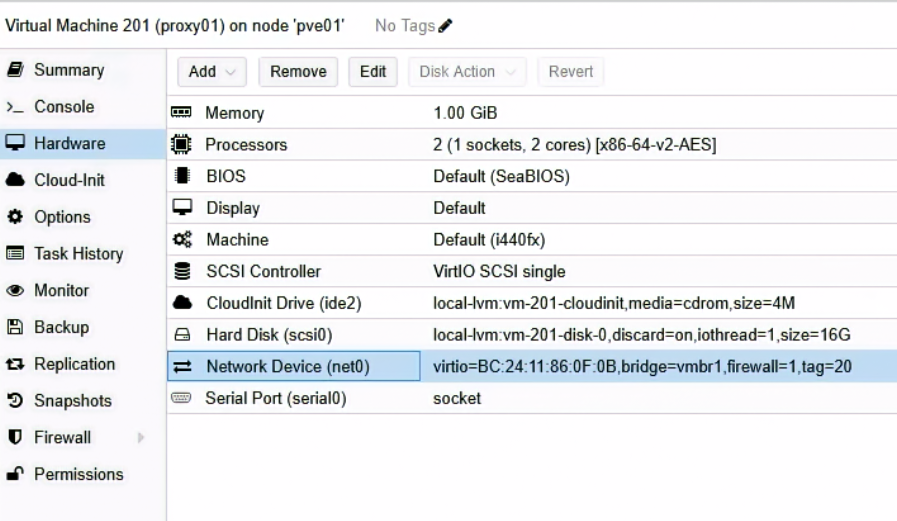
圖（一）proxy01 使用 local-lvm、16 GiB 磁碟、vmbr1 與 VLAN Tag 20
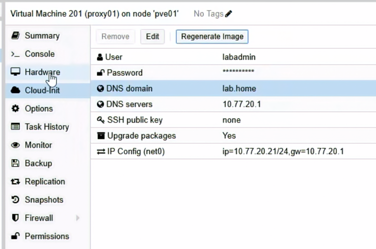
圖（二）proxy01 設定為 10.77.20.21，Gateway 與 DNS 均指向 OPNsense
1.2 建立 proxy02
重複 1.1 的 23 個步驟，只替換以下值：
Target Node：pve02。VM ID：202。Name：proxy02。Target Storage：pve02 的local-lvm。- IPv4/CIDR：
10.77.20.22/24。
其餘保持 2 vCPU、1024 MiB RAM、16 GiB System Disk、vmbr1、VLAN Tag 20、Gateway 與 DNS 10.77.20.1。
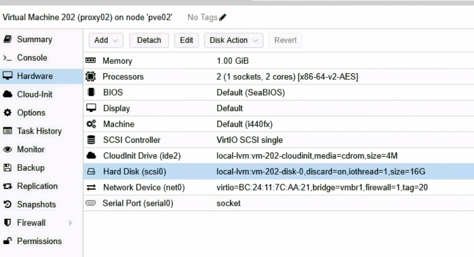
圖（三）proxy02 建立於 pve02，使用 local-lvm、16 GiB 磁碟與 VLAN Tag 20
1.3 建立 app02
再重複 1.1 的流程，改用以下值：
Target Node：pve03。VM ID：212。Name：app02。Target Storage：ceph-vm。- CPU：1 Socket、1 Core。
- Memory：1024 MiB，取消 Ballooning。
- System Disk 最終容量：12 GiB。
- IPv4/CIDR：
10.77.20.32/24。
app01 與 app02 使用 ceph-vm，用來示範 Ceph RBD、Live Migration 與 PVE HA 工作負載。Proxy 與 Client 則使用各節點 local-lvm，避免所有一般服務都消耗三副本 Ceph 容量。
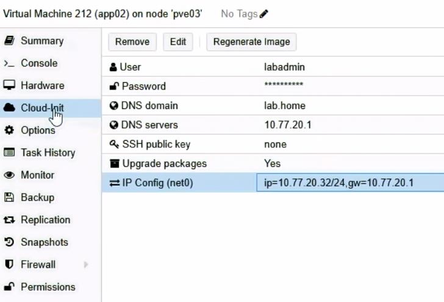
圖（四）app02 設定為 10.77.20.32，Gateway 與 DNS 均為 10.77.20.1
1.4 建立 client01
再重複 1.1 的流程，改用以下值：
Target Node：pve03。VM ID：241。Name：client01。Target Storage：pve03 的local-lvm。- CPU：1 Socket、1 Core。
- Memory：1024 MiB，取消 Ballooning。
- System Disk 最終容量：8 GiB。
- IPv4/CIDR：
10.77.20.41/24。
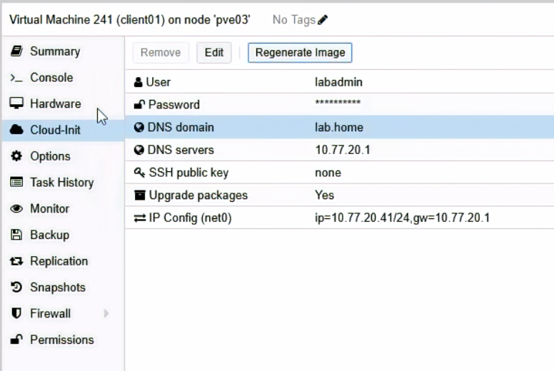
圖（五）client01 設定為 10.77.20.41，作為本日服務路徑的用戶端
1.5 確認五台 VM
在 proxy01、proxy02、app02、client01 的 Console 各自執行：
hostnamectl --static
ip -br address
ip route
cloud-init status --long
curl -4I --connect-timeout 10 https://deb.debian.org/
Hostname 如果是 Template 名稱，在當前 VM 執行 sudo hostnamectl set-hostname 當前主機名，重新登入 Console 再確認。
在既有 app01 只執行同一組確認指令，保留原本的 SSH 帳號與 Key。
1.6 確認 systemd-resolved 已取得內部 DNS
操作節點：proxy01、proxy02、app01、app02、client01。逐台確認，不能只用外部網站可以連線來判斷 DNS 設定完成。
PVE Cloud-Init 畫面已設定 DNS Server 10.77.20.1 與 DNS Domain lab.home，但 Debian 實際查詢名稱時會先交給 systemd-resolved 的本機 Stub Resolver 127.0.0.53。因此還要確認 systemd-resolved 真正取得 OPNsense DNS：
cat /etc/resolv.conf
resolvectl status
resolvectl query deb.debian.org
/etc/resolv.conf 顯示 nameserver 127.0.0.53 是正常的 Stub Resolver 架構，不代表實際上游 DNS 是本機。resolvectl status 的 Global 或網路介面區塊必須看到：
DNS Servers: 10.77.20.1
DNS Domain: lab.home
如果已看到這兩項，且 resolvectl query deb.debian.org 成功，不需建立額外設定檔。
如果 Cloud-Init 已寫入 IP、預設閘道與 Search Domain，systemd-resolved 卻沒有取得 10.77.20.1，在當前主機建立持久化 drop-in：
sudo install -d -m 0755 /etc/systemd/resolved.conf.d
printf '%s\n' \
'[Resolve]' \
'DNS=10.77.20.1' \
'Domains=lab.home' |
sudo tee /etc/systemd/resolved.conf.d/10-lab-dns.conf
sudo systemctl restart systemd-resolved
sudo resolvectl flush-caches
重新驗證：
resolvectl status
resolvectl query deb.debian.org
getent ahostsv4 deb.debian.org
指令成功後重開機一次，確認設定在重開後存在：
sudo reboot
重新登入後執行：
resolvectl status
resolvectl query deb.debian.org
不要直接編輯 /etc/resolv.conf。本系統的該路徑連結到 /run/systemd/resolve/stub-resolv.conf，內容會由 systemd-resolved 重新產生；直接修改無法成為穩定的開機後設定。建立 web.lab.home、db-rw.lab.home 與 db-ro.lab.home 後，會再用這條內部 DNS 路徑驗證三組 VIP。
如果已經完成固定入口，可再執行：
getent ahostsv4 web.lab.home
getent ahostsv4 db-rw.lab.home
getent ahostsv4 db-ro.lab.home
三個名稱應分別解析為 10.77.20.10、10.77.20.11 與 10.77.20.12。若直接查詢 dig @10.77.20.1 <名稱> A 有答案，getent 卻沒有輸出，表示 OPNsense 的 DNS Record 存在，問題位於該台 Debian 主機的 systemd-resolved 上游設定。
2. 建立 Application Database 與最小權限 Role
操作位置：目前的 Patroni Leader。先用 patronictl list 找出 Leader，不要假設一定是 pg01。
在任一 PG Node 執行：
sudo -u postgres patronictl -c /etc/patroni/config.yml list
找到 Role 為 Leader 的節點後，進入該節點 Console：
sudo -u postgres psql
依序執行：
CREATE ROLE app_owner LOGIN;
CREATE ROLE app_rw LOGIN;
CREATE ROLE app_ro LOGIN;
ALTER ROLE app_ro SET default_transaction_read_only = on;
\password app_owner
\password app_rw
\password app_ro
\c appdb
CREATE SCHEMA IF NOT EXISTS app AUTHORIZATION app_owner;
GRANT CONNECT ON DATABASE appdb TO app_rw, app_ro;
GRANT USAGE ON SCHEMA app TO app_rw, app_ro;
ALTER DEFAULT PRIVILEGES FOR ROLE app_owner IN SCHEMA app
GRANT SELECT, INSERT, UPDATE, DELETE ON TABLES TO app_rw;
ALTER DEFAULT PRIVILEGES FOR ROLE app_owner IN SCHEMA app
GRANT USAGE, SELECT ON SEQUENCES TO app_rw;
ALTER DEFAULT PRIVILEGES FOR ROLE app_owner IN SCHEMA app
GRANT SELECT ON TABLES TO app_ro;
\q
三次 \password 都使用互動輸入，不把密碼寫在 SQL File 或 Shell History。
以 PostgreSQL Local Administrative Session 切換成 app_owner 建立 Application Table：
sudo -u postgres psql appdb -v ON_ERROR_STOP=1
SET ROLE app_owner;
CREATE TABLE IF NOT EXISTS app.failover_probe(
id bigint GENERATED ALWAYS AS IDENTITY PRIMARY KEY,
created_at timestamptz DEFAULT clock_timestamp(),
note text NOT NULL
);
RESET ROLE;
\q
回到 PostgreSQL 管理 Session，確認既有 Table 也套用權限：
sudo -u postgres psql appdb
GRANT SELECT, INSERT, UPDATE, DELETE ON app.failover_probe TO app_rw;
GRANT USAGE, SELECT ON ALL SEQUENCES IN SCHEMA app TO app_rw;
GRANT SELECT ON app.failover_probe TO app_ro;
\q
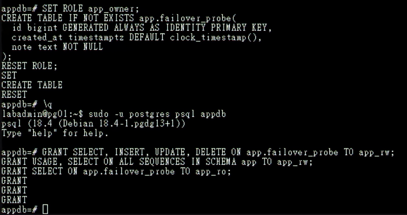
圖（六）app.failover_probe 建立完成，app_rw 與 app_ro 取得各自需要的權限
帳號建立完成後先不要在本機測試密碼連線。此時 Patroni 管理的 pg_hba 還沒允許 Proxy 來源，先完成下一節再透過 HAProxy 測試，才能同時證明 Role、HBA 與實際連線路徑都正確。
2.1 將 Application 來源加入 Patroni 管理的 pg_hba
操作位置：任一可執行 patronictl 的 PG Node。
sudo -u postgres patronictl -c /etc/patroni/config.yml edit-config iron-pg
在目前 Dynamic Configuration 的 postgresql → pg_hba 清單中，把以下規則放在最終 reject 之前：
- hostssl appdb app_rw 10.77.20.21/32 scram-sha-256
- hostssl appdb app_rw 10.77.20.22/32 scram-sha-256
- hostssl appdb app_ro 10.77.20.21/32 scram-sha-256
- hostssl appdb app_ro 10.77.20.22/32 scram-sha-256
儲存並離開 Editor，確認差異後輸入 y 套用。接著執行：
sudo -u postgres patronictl -c /etc/patroni/config.yml reload iron-pg --force
sudo -u postgres patronictl -c /etc/patroni/config.yml show-config iron-pg
接著依序登入 pg01、pg02、pg03，每台都執行：
sudo -u postgres psql -d postgres -P pager=off \
-c "SELECT line_number,type,database,user_name,address,auth_method,error FROM pg_hba_file_rules WHERE address IN ('10.77.20.21','10.77.20.22') ORDER BY line_number;"
每台都應看到四條 hostssl 規則，error 必須為空。若某台尚未更新，先執行 sudo systemctl reload patroni 並重新檢查。不要直接只改目前 Leader 的 pg_hba.conf，否則切換後規則會不一致。
3. 建立兩個 Web Backend
操作順序：先 app01，確認服務正常後再於 app02 重複。兩台設定相同，Host Name 與 IP 不同。
app01／app02 安裝：
sudo apt update
sudo apt install -y python3-flask python3-psycopg2
sudo install -d -m 0755 /opt/iron-app
開啟 Application File：
sudo nano /opt/iron-app/app.py
貼上以下內容：
import os
import socket
import psycopg2
from flask import Flask, jsonify
app = Flask(__name__)
def connect_db():
options = dict(
host=os.environ["DB_HOST"],
port=5432,
dbname="appdb",
user="app_rw",
password=os.environ["DB_PASSWORD"],
sslmode=os.environ.get("DB_SSLMODE", "verify-full"),
)
if os.environ.get("DB_SSLROOTCERT"):
options["sslrootcert"] = os.environ["DB_SSLROOTCERT"]
return psycopg2.connect(**options)
@app.get("/health")
def health():
return jsonify(status="ok", backend=socket.gethostname())
@app.get("/")
def index():
return jsonify(message="iron-lab", backend=socket.gethostname())
@app.post("/write")
def write():
with connect_db() as conn:
with conn.cursor() as cur:
cur.execute("INSERT INTO app.failover_probe(note) VALUES (%s) RETURNING id", (socket.gethostname(),))
row_id = cur.fetchone()[0]
return jsonify(id=row_id, backend=socket.gethostname())
app.run(host="0.0.0.0", port=8080)
按 Ctrl+O、Enter、Ctrl+X 儲存離開。
建立設定目錄，再開啟 Environment File：
sudo install -d -m 0755 /etc/iron-app
sudo nano /etc/iron-app.env
在 Editor 貼上：
DB_HOST=10.77.20.21
DB_SSLMODE=require
DB_PASSWORD=實際app_rw密碼
按 Ctrl+O、Enter、Ctrl+X 儲存，再限制權限：
sudo chown root:root /etc/iron-app.env
sudo chmod 600 /etc/iron-app.env
本次尚未建立 VIP，因此只在受控 Lab 內暫時透過 proxy01 並使用 sslmode=require 驗證功能。建立固定入口時會安裝 Root CA，並將 DB_HOST 改成 db-rw.lab.home、DB_SSLMODE 改為 verify-full、增加 DB_SSLROOTCERT=/etc/iron-app/pg-ca.crt。三台 PostgreSQL 憑證 SAN 必須包含這個服務名稱；正式流量應使用完整的憑證與名稱驗證。
開啟 systemd Unit File：
sudo nano /etc/systemd/system/iron-app.service
貼上以下內容：
[Unit]
Description=Iron Lab Web Backend
After=network-online.target
Wants=network-online.target
[Service]
EnvironmentFile=/etc/iron-app.env
ExecStart=/usr/bin/python3 /opt/iron-app/app.py
User=nobody
Group=nogroup
Restart=on-failure
[Install]
WantedBy=multi-user.target
按 Ctrl+O、Enter、Ctrl+X 儲存，再執行：
sudo systemctl daemon-reload
sudo systemctl enable --now iron-app
sudo systemctl status iron-app --no-pager
curl http://127.0.0.1:8080/health
4. 安裝 Nginx 與 HAProxy
操作節點：proxy01、proxy02。逐台安裝並確認版本。
proxy01／02：
sudo apt update
sudo apt install -y nginx haproxy curl socat
nginx -v
haproxy -vv | sed -n '1,5p'
echo 'net.ipv4.ip_nonlocal_bind=1' | sudo tee /etc/sysctl.d/90-vip.conf
sudo sysctl --system
sudo sysctl net.ipv4.ip_nonlocal_bind
最後一行必須顯示 net.ipv4.ip_nonlocal_bind = 1。啟動 Keepalived 前，Web／DB VIP 尚未掛在 Proxy NIC；HAProxy 要靠這項 Kernel Setting 預先 Bind 10.77.20.11 與 10.77.20.12。
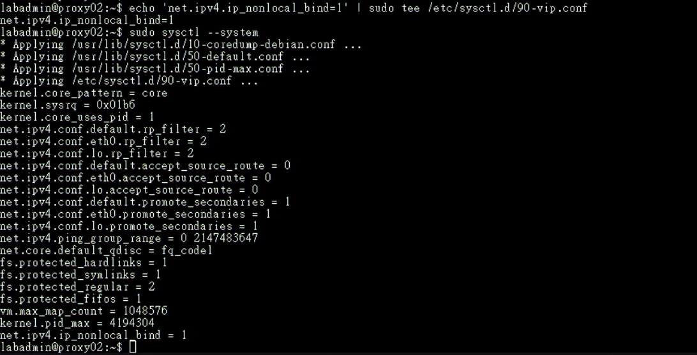
圖（七）proxy02 套用設定後，net.ipv4.ip_nonlocal_bind 為 1
4.1 啟用 Proxy 到 PostgreSQL／Patroni 的 OPNsense 規則
操作位置：OPNsense Web UI。先前只建立 Alias，現在 Proxy 與 PostgreSQL 都已存在，必須在啟動 HAProxy Health Check 前正式加入服務專屬規則。
進入 Firewall → Rules，在左上角選擇 LAB_INTERNAL。新增第一條規則：
Action：Pass。Quick：保持勾選。Interface：只選 Interface GroupLAB_INTERNAL；Invert Interface：不要勾選。Direction：in。Version：IPv4。Protocol：TCP。Source：AliasPROXY_NODES。Source Port：any。Destination：AliasPG_NODES。Destination Port：AliasPGSQL_PORT。Description：Allow Proxy to PostgreSQL。- 按
Save。
再新增第二條規則，只有 Destination Port 與 Description 不同：
Action：Pass，Quick保持勾選。Interface：只選 Interface GroupLAB_INTERNAL，Direction：in，Version：IPv4，Protocol：TCP。Source：AliasPROXY_NODES，Source Port：any。Destination：AliasPG_NODES。Destination Port：AliasPATRONI_API。Description：Allow Proxy to Patroni API。- 按
Save。
將兩條規則移到 Block LAB_INTERNAL to internal networks 上方，再按 Apply。正確順序至少要包含：
Allow Proxy to PostgreSQL
Allow Proxy to Patroni API
Block LAB_INTERNAL to internal networks
規則要建立在流量進入 OPNsense 的 LAB_INTERNAL Group／SERVICE 成員路徑，不要建立在 DATABASE Interface；OPNsense Stateful Firewall 會自動允許回程封包，不需再建立 PG → Proxy 的反向規則。
儲存後重新開啟兩條規則核對 Interface。在 Rules [new] 中，只指定 LAB_INTERNAL Group 應歸類為 Group Rule；若顯示 Floating Rule，通常代表選到了 any、多個 Interface 或 Invert Interface，修正後再 Apply。不要改成單獨的 SERVICE Interface Rule，因為既有的 Block LAB_INTERNAL to internal networks Group Rule 會比單一 Interface Rule 更早處理。
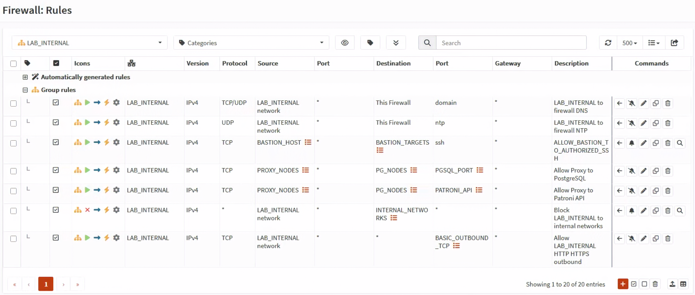
圖（八）兩條 Proxy 專屬規則位於內部網路阻擋規則之前
套用後，先在 proxy01 執行以下整段：
for ip in 10.77.30.11 10.77.30.12 10.77.30.13; do
echo "=== ${ip} ==="
if timeout 3 bash -c "</dev/tcp/${ip}/5432"; then
echo 'PostgreSQL 5432: reachable'
else
echo 'PostgreSQL 5432: FAILED'
fi
curl -sS \
--connect-timeout 3 \
-o /dev/null \
-w 'Patroni 8008: HTTP %{http_code}\n' \
"http://${ip}:8008/"
done
三台都必須顯示 PostgreSQL 5432: reachable，Patroni 8008 必須回傳可連線的 HTTP Status。接著在 proxy02 重複同一段測試。若出現 Timeout，先到 Firewall → Log Files → Live View 以來源 10.77.20.21／.22、目的 10.77.30.11～.13 查 Block；不要先修改 HAProxy。
只有兩台 Proxy 對三台 PG 的 5432 與 8008 都通過後，才繼續下一節。
5. Nginx Reverse Proxy
操作順序：先在 proxy01 完成設定、nginx -t 與本機測試，再於 proxy02 重複。
在 proxy01 開啟 Nginx Site File：
sudo nano /etc/nginx/sites-available/iron-web
貼上以下內容：
upstream iron_backends {
zone iron_backends 64k;
least_conn;
server 10.77.20.31:8080 max_fails=2 fail_timeout=5s;
server 10.77.20.32:8080 max_fails=2 fail_timeout=5s;
}
server {
listen 80;
server_name web.lab.home;
location = /health {
proxy_pass http://iron_backends/health;
proxy_connect_timeout 2s;
proxy_read_timeout 3s;
}
location / {
proxy_pass http://iron_backends;
proxy_set_header Host $host;
proxy_set_header X-Real-IP $remote_addr;
proxy_set_header X-Forwarded-For $proxy_add_x_forwarded_for;
proxy_set_header X-Forwarded-Proto $scheme;
proxy_connect_timeout 2s;
proxy_read_timeout 10s;
}
}
按 Ctrl+O、Enter、Ctrl+X 儲存，再執行：
sudo ln -sfn /etc/nginx/sites-available/iron-web /etc/nginx/sites-enabled/iron-web
sudo rm -f /etc/nginx/sites-enabled/default
sudo nginx -t
sudo systemctl reload nginx
sudo systemctl status nginx --no-pager
curl -sS http://127.0.0.1/health
proxy01 完成後，在 proxy02 重複本節的所有步驟。
在 proxy02 完成後，分別於兩台執行以下指令，確認 Own-IP 的 HTTP 入口都可使用：
proxy01：
curl -sS http://10.77.20.21/health
proxy02：
curl -sS http://10.77.20.22/health
本日的 Web 入口使用內部 HTTP，先驗證 Nginx、Backend 與切換流程。正式網域、Cloudflare Origin Certificate、Nginx listen 443 ssl 與 WAN TCP 443 會在建立外部入口時一併完成。
6. HAProxy 設定
操作順序：先在 proxy01 完整覆蓋設定、檢查並啟動，再到 proxy02 使用它自己的完整設定。不要把下列內容附加到 Debian 預設檔案後面。
HAProxy 的 PostgreSQL Client Traffic 使用 TCP 5432／5433，但 Backend Health Check 改連 Patroni HTTP 8008，藉此分辨 Primary 與 Replica。defaults.mode 必須是 tcp；只有本機 Stats Page 使用 mode http。
6.1 proxy01 完整設定
操作節點：只在 proxy01。以下整段可直接複製貼上。
sudo cp -an \
/etc/haproxy/haproxy.cfg \
/etc/haproxy/haproxy.cfg.day25.bak
sudo tee /etc/haproxy/haproxy.cfg >/dev/null <<'HAPROXY'
global
log /dev/log local0
log /dev/log local1 notice
user haproxy
group haproxy
daemon
stats socket /run/haproxy/admin.sock mode 660 level admin
stats timeout 30s
defaults
log global
mode tcp
option tcplog
option dontlognull
timeout connect 3s
timeout client 30s
timeout server 30s
frontend pg_rw_node
bind 10.77.20.21:5432
default_backend pg_primary
frontend pg_rw_vip
bind 10.77.20.11:5432
default_backend pg_primary
frontend pg_ro_node
bind 10.77.20.21:5433
default_backend pg_replicas
frontend pg_ro_vip
bind 10.77.20.12:5432
default_backend pg_replicas
backend pg_primary
option httpchk GET /primary
http-check expect status 200
default-server inter 2s fall 2 rise 2 on-marked-down shutdown-sessions
server pg01 10.77.30.11:5432 check port 8008
server pg02 10.77.30.12:5432 check port 8008
server pg03 10.77.30.13:5432 check port 8008
backend pg_replicas
balance roundrobin
option httpchk GET /replica?lag=64MB
http-check expect status 200
default-server inter 2s fall 2 rise 2
server pg01 10.77.30.11:5432 check port 8008
server pg02 10.77.30.12:5432 check port 8008
server pg03 10.77.30.13:5432 check port 8008
listen local_stats
bind 127.0.0.1:8404
mode http
stats enable
stats uri /stats
HAPROXY
test "$(sudo sysctl -n net.ipv4.ip_nonlocal_bind)" = '1' && \
echo 'ip_nonlocal_bind: OK'
sudo haproxy -c -f /etc/haproxy/haproxy.cfg
sudo systemctl enable haproxy
sudo systemctl restart haproxy
sudo systemctl status haproxy -l --no-pager
結尾的 HAPROXY 必須從行首開始並單獨一行。restart 是必要步驟：enable --now 不會讓已在 Running 狀態的 HAProxy 重新載入剛寫入的設定。
6.2 proxy02 完整設定
操作節點：只在 proxy02。以下內容已使用 proxy02 Own-IP 10.77.20.22，不需手動替換。
sudo cp -an \
/etc/haproxy/haproxy.cfg \
/etc/haproxy/haproxy.cfg.day25.bak
sudo tee /etc/haproxy/haproxy.cfg >/dev/null <<'HAPROXY'
global
log /dev/log local0
log /dev/log local1 notice
user haproxy
group haproxy
daemon
stats socket /run/haproxy/admin.sock mode 660 level admin
stats timeout 30s
defaults
log global
mode tcp
option tcplog
option dontlognull
timeout connect 3s
timeout client 30s
timeout server 30s
frontend pg_rw_node
bind 10.77.20.22:5432
default_backend pg_primary
frontend pg_rw_vip
bind 10.77.20.11:5432
default_backend pg_primary
frontend pg_ro_node
bind 10.77.20.22:5433
default_backend pg_replicas
frontend pg_ro_vip
bind 10.77.20.12:5432
default_backend pg_replicas
backend pg_primary
option httpchk GET /primary
http-check expect status 200
default-server inter 2s fall 2 rise 2 on-marked-down shutdown-sessions
server pg01 10.77.30.11:5432 check port 8008
server pg02 10.77.30.12:5432 check port 8008
server pg03 10.77.30.13:5432 check port 8008
backend pg_replicas
balance roundrobin
option httpchk GET /replica?lag=64MB
http-check expect status 200
default-server inter 2s fall 2 rise 2
server pg01 10.77.30.11:5432 check port 8008
server pg02 10.77.30.12:5432 check port 8008
server pg03 10.77.30.13:5432 check port 8008
listen local_stats
bind 127.0.0.1:8404
mode http
stats enable
stats uri /stats
HAPROXY
test "$(sudo sysctl -n net.ipv4.ip_nonlocal_bind)" = '1' && \
echo 'ip_nonlocal_bind: OK'
sudo haproxy -c -f /etc/haproxy/haproxy.cfg
sudo systemctl enable haproxy
sudo systemctl restart haproxy
sudo systemctl status haproxy -l --no-pager
6.3 逐台驗證 Listener 與 Backend
在 proxy01：
sudo ss -lntp | \
grep -E '10\.77\.20\.(21|11|12):(5432|5433)'
echo 'show stat' | \
sudo socat stdio /run/haproxy/admin.sock | \
awk -F, '
BEGIN {
printf "%-13s %-6s %-7s %-8s %s\n", "BACKEND", "NODE", "STATUS", "CHECK", "HTTP"
}
($1 == "pg_primary" || $1 == "pg_replicas") && $2 != "BACKEND" {
printf "%-13s %-6s %-7s %-8s %s\n", $1, $2, $18, $37, $38
}
'
必須看到 10.77.20.21:5432、10.77.20.21:5433、10.77.20.11:5432、10.77.20.12:5432。
在 proxy02：
sudo ss -lntp | \
grep -E '10\.77\.20\.(22|11|12):(5432|5433)'
echo 'show stat' | \
sudo socat stdio /run/haproxy/admin.sock | \
awk -F, '
BEGIN {
printf "%-13s %-6s %-7s %-8s %s\n", "BACKEND", "NODE", "STATUS", "CHECK", "HTTP"
}
($1 == "pg_primary" || $1 == "pg_replicas") && $2 != "BACKEND" {
printf "%-13s %-6s %-7s %-8s %s\n", $1, $2, $18, $37, $38
}
'
必須看到 10.77.20.22:5432、10.77.20.22:5433、10.77.20.11:5432、10.77.20.12:5432。pg_primary 應只有目前 Patroni Leader 為 UP / L7OK / 200，pg_replicas 應有兩台 Replica 為 UP / L7OK / 200。同一節點在不符合其角色的 Backend 顯示 DOWN / L7STS / 503，代表角色篩選正常，節點本身可以保持在線。若 Listener 不完整或 Restart 失敗，執行 sudo journalctl -u haproxy -b -n 100 -o cat --no-pager，修正後再繼續 Client 測試。
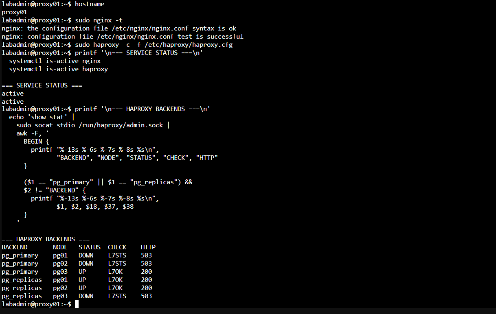
圖（九）proxy01 的 Nginx、HAProxy 與角色感知 Backend 均正常
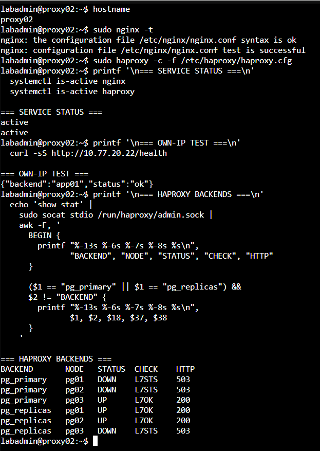
圖（十）proxy02 能回應 Web 請求，並取得相同的 PostgreSQL 角色結果
7. 基本功能測試
操作節點：client01。必要時從 jump01 對照管理路徑，但主要測試結果以 client01 為準。
client01：
sudo apt update
sudo apt install -y curl postgresql-client
psql --version
for i in $(seq 1 6); do curl -s http://10.77.20.21/; echo; done
psql 'host=10.77.20.21 port=5432 dbname=appdb user=app_rw sslmode=require'
psql 'host=10.77.20.21 port=5433 dbname=appdb user=app_ro sslmode=require'
第一個 app_rw 連線提示輸入密碼後，執行：
INSERT INTO app.failover_probe(note)
VALUES ('day25-app-rw-test')
RETURNING id,created_at,note;
\q
這筆 INSERT 必須成功。第二個 app_ro 連線提示輸入密碼後，先讀取資料，再嘗試寫入：
SELECT id,created_at,note
FROM app.failover_probe
ORDER BY id DESC
LIMIT 5;
INSERT INTO app.failover_probe(note)
VALUES ('day25-app-ro-must-fail');
\q
SELECT 必須成功，INSERT 必須收到 Read-only Transaction 或 Permission Denied。若 app_rw、app_ro 都被 HBA 拒絕，先到目前 Leader 查看 PostgreSQL Log，並確認連線抵達資料庫時的 Source IP 是 proxy01 的 10.77.20.21。
重複 Web Request 應看到 app01／app02；RW 連線落到 Primary，RO 連線落到 Replica。這裡使用 Proxy Node IP，Certificate SAN 未包含 10.77.20.21，因此暫時使用 sslmode=require。改用 db-rw.lab.home、db-ro.lab.home 後必須改為 verify-full。
8. Web Backend 故障測試
操作位置：client01 持續送 Request，app01 執行停止與恢復。
在 client01 開啟第一個 Console：
while true; do
date -Is
curl -sS --connect-timeout 2 http://10.77.20.21/health || echo 'request failed'
sleep 1
done
在 app01 執行（這裡只停 Web Backend，不要在 app01 查 Nginx Log）：
sudo systemctl stop iron-app
回到 client01，確認新 Request 能由 app02 持續回應。接著登入 proxy01 檢查 Nginx Log（/var/log/nginx/ 不在 app01）：
sudo tail -n 50 /var/log/nginx/error.log
sudo tail -n 50 /var/log/nginx/access.log
最後回到 app01 恢復 Web Backend：
sudo systemctl start iron-app
curl -s http://127.0.0.1:8080/health

圖（十一）app01 的 Web Backend 完成停止、恢復與本機健康檢查

圖（十二）app01 停止期間由 app02 持續回應，本次未觀察到失敗請求
上述兩張畫面使用 0.2 秒探測腳本記錄；完整量測方法與結果判讀請接續 額外實作：量測代理與應用程式中斷時間。
9. PostgreSQL Role 切換測試
操作位置：client01 持續寫入，目前 Leader 執行 Planned Switchover。今天只測 HAProxy Node IP，不測 VIP。
在 client01：
while true; do
date -Is
curl -sS -X POST --connect-timeout 3 http://10.77.20.21/write || echo 'write failed'
sleep 1
done
在任一 PG Node 先記錄目前 Leader，再執行：
sudo -u postgres patronictl -c /etc/patroni/config.yml list
sudo -u postgres patronictl -c /etc/patroni/config.yml switchover
依提示選目前 Leader 與目標 Candidate，確認後觀察 Client。切換完成再執行：
sudo -u postgres patronictl -c /etc/patroni/config.yml list
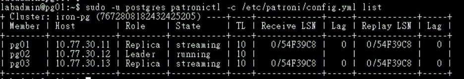
圖（十三）pg02 接任 Leader 後，pg01 與 pg03 均恢復為 streaming Replica
到 proxy01 確認 HAProxy 已把 RW Backend 指到新 Leader：
echo 'show stat' | \
sudo socat stdio /run/haproxy/admin.sock | \
awk -F, '
BEGIN {
printf "%-13s %-6s %-7s %-8s %s\n", "BACKEND", "NODE", "STATUS", "CHECK", "HTTP"
}
($1 == "pg_primary" || $1 == "pg_replicas") && $2 != "BACKEND" {
printf "%-13s %-6s %-7s %-8s %s\n", $1, $2, $18, $37, $38
}
'
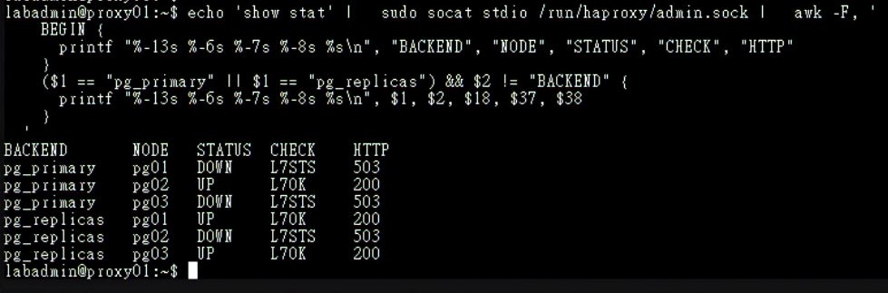
圖（十四）HAProxy 將 pg02 列為唯一可用的 Primary，並保留兩台 Replica
回到 client01 重新建立 DB-RW 連線，確認新連線抵達 pg02 並完成寫入：
psql \
-W \
'host=10.77.20.21 port=5432 dbname=appdb user=app_rw sslmode=require' \
-P pager=off \
-v ON_ERROR_STOP=1 \
-c "SELECT inet_server_addr() AS server_ip,
inet_server_port() AS server_port,
pg_is_in_recovery() AS in_recovery;" \
-c "INSERT INTO app.failover_probe(note)
VALUES ('day25-after-switchover')
RETURNING id,created_at,note;"
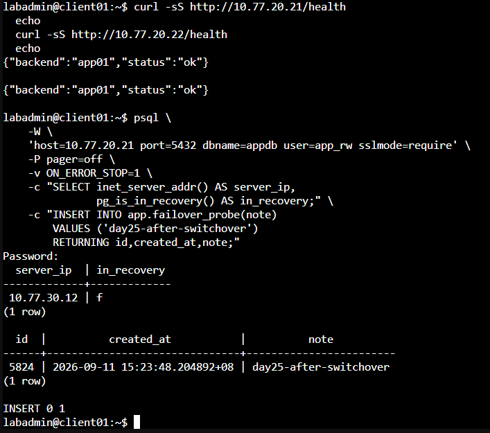
圖（十五）DB-RW 新連線抵達 pg02，測試資料寫入成功
本日驗證 Nginx 與 HAProxy 各自在 proxy01、proxy02 的固定 IP 上可用；Proxy 節點故障與 VIP 移動由固定入口實作接續驗證。